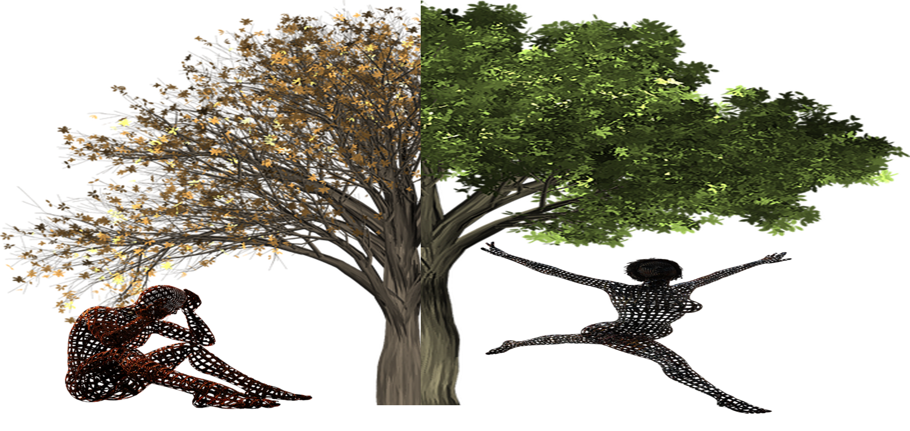

Πολυάριθμες μελέτες έχουν εξετάσει τις αρνητικές ψυχολογικές επιπτώσεις των τραυματικών εμπειριών στην ψυχική υγεία. Μεταξύ των πιο σοβαρών ζητημάτων ψυχικής υγείας είναι το μετατραυματικό στρες (PTS), που εκδηλώνεται μέσω ενοχλητικών σκέψεων, έντονων αρνητικών συναισθημάτων (π.χ. φόβος, τρόμος, θυμός) και εφιάλτες. Σύμφωνα με το DSM-5, διάγνωση PTSD απαιτεί έκθεση σε ένα τραυματικό γεγονός (Κριτήριο Α), που ορίζεται ως άμεση/έμμεση έκθεση σε θάνατο, σοβαρό τραυματισμό ή σεξουαλική βία.
Οι ερευνητές υποστηρίζουν ότι το κριτήριο Α πρέπει να επεκταθεί για να συμπεριλάβει την πανδημία του COVID-19 και τα μέτρα lockdown λόγω των υψηλών ποσοστών PTS. Η αυστηρή εφαρμογή των κριτηρίων DSM-5 κινδυνεύει να αφήσει πολλούς ασθενείς χωρίς την κατάλληλη φροντίδα. Τα στοιχεία δείχνουν ότι οι περιορισμοί της πανδημίας επηρέασαν δυσμενώς την παγκόσμια ψυχική υγεία (ΠΟΥ, 2022). Μια μετα-ανάλυση 900.000 άτομα σε 32 χώρες (Liu et al., 2024) αποκάλυψαν ότι οι διακοπές ρουτίνας που σχετίζονται με τον COVID-19 συσχετίζονται με την κατάθλιψη, το άγχος και την ψυχολογική δυσφορία.
Οι τραυματικές εμπειρίες μπορούν επίσης να οδηγήσουν σε θετικές ψυχολογικές αλλαγές γνωστές ως μετατραυματική ανάπτυξη (PTG) - προσωπική μεταμόρφωση που προκύπτει από την αντιμετώπιση απειλητικών για τη ζωή προκλήσεων. Το PTG εκδηλώνεται μέσω:
Μελέτες δείχνουν ότι το 39%-89% των ανθρώπων εμφάνισαν PTG κατά τη διάρκεια του COVID-19 όταν εκλήθησαν ως τραυματική πρόκληση.